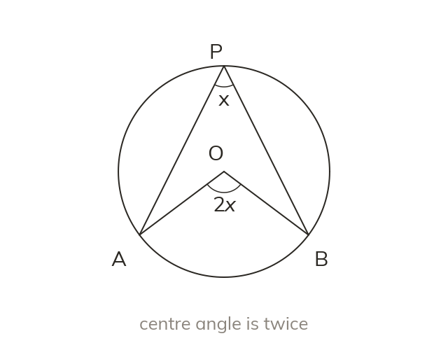

The angle at the centre
The angle at the centre is twice the angle at the circumference. Both angles must stand on the same arc.
The angle at the centre is twice the angle at the circumference when both stand on the same arc. Name the arc first, then double or halve.